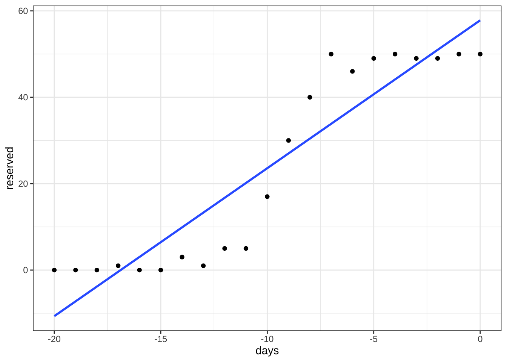
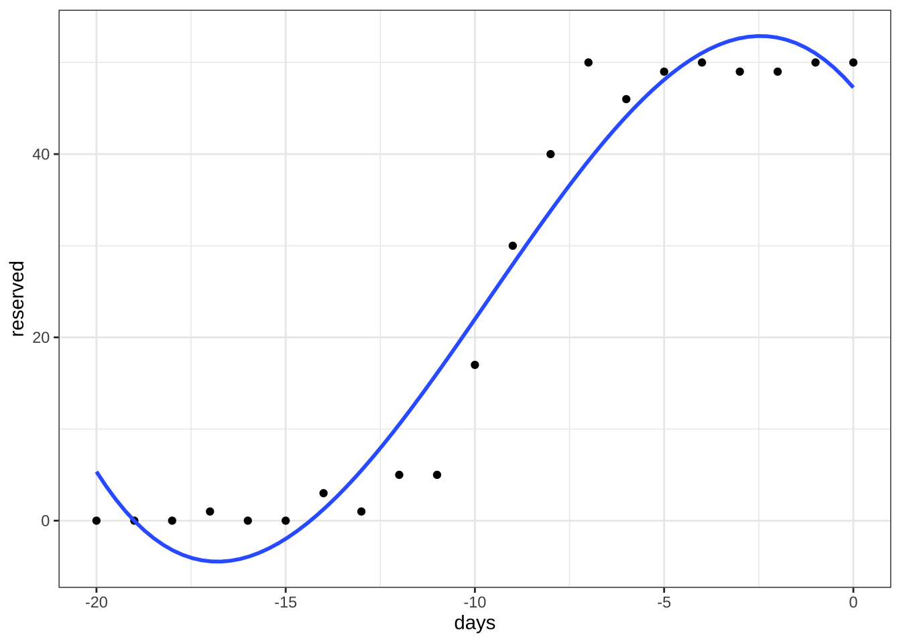
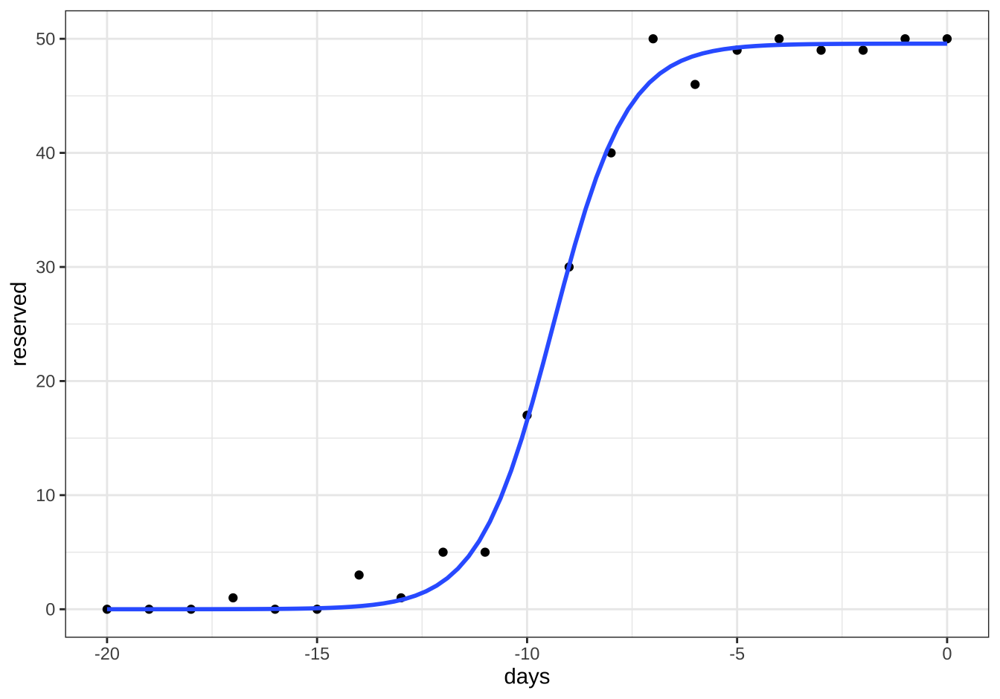

제 10 장 회귀모형의 확장
10.1 개요
이번 장에는 특별한 목적을 가지는 다양한 확장 회귀모형에 대하여 논의한다. 다음과 같은 모형들을 논의할 것이다.
- 비선형 회귀
- 로버스트 회귀분석
10.2 비선형 회귀분석
10.2.1 예제: 철도 여객 운송
철도 여객 운송은 사람들이 장거리 이동을 하는 경우 많이 이용한다. 하루에고 백 대가 넘는 열차가 운행되며 하나의 열차는 출발역에서 시작하여 중간에 여러 역에 정차함으로서 여러 지역 간의 여행을 가능하게 한다. 이렇게 하루에도 수 천개의 출발지와 목적지를 가지는 기차 노선이 운영되고 있다. 따라서 여객 운송을 관리하는 주체는 여객 노선의 수요를 예측하고 좌석을 합리적이고 효율적으로 할당하는 작업이 필요하다.
다음은 A역에서 B역으로 승객을 수송하는 고속열차의 예약 현황을 일별로 나타낸 자료이다. 출발일 20일 전부터 예약을 받으며 출발일에 수송할 수 있는 승객의 최대 수는 50명이다.
예약 자료와 그에 대한 그림을 그려보면 다음과 같다.
df %>% kbl(caption = '열차 죄석 예약 현황(출발일 20일 전부터)') %>%
kable_styling(bootstrap_options = "striped", full_width = T, position = "center", font_size=12)| days | reserved |
|---|---|
| -20 | 0 |
| -19 | 0 |
| -18 | 0 |
| -17 | 1 |
| -16 | 0 |
| -15 | 0 |
| -14 | 3 |
| -13 | 1 |
| -12 | 5 |
| -11 | 5 |
| -10 | 17 |
| -9 | 30 |
| -8 | 40 |
| -7 | 50 |
| -6 | 46 |
| -5 | 49 |
| -4 | 50 |
| -3 | 49 |
| -2 | 49 |
| -1 | 50 |
| 0 | 50 |
df %>% ggplot(aes(x=days, y=reserved)) +
geom_point() +
labs(x="출발전 일수", y="예약 인원수") +
theme_bw()그림 10.1: 예약 20일 전에서 출발일까지의 열차 예약 현황
예약 현황을 일별로 나타낸 그림 10.1 의 특징을 보면 다음과 같다.
- 예약 인원수는 가장 작은 값이 0명, 가장 큰 값이 50명 이라는 제약이 있다.
- 예약 인원수는 일반적으로 출발일에 가까와 지면서 증가를 하는 경향이 있다.
- 예약 인원수는 특정 시점에서 급격하게 증가한다.
- 증가를 하지만 할당된 50 좌석을 넘을 수 는 없다 (수렴성).
10.2.2 선형모형의 한계
이제 열차 예약 자료를 예약전 일수(days)을 설명변수로 하고 예약 인원 수(reserved)를 반응변수로 하는 단순 회귀모형을 적합해보자.
아래 그림에서 볼 수 있듯이 단순 회귀모형은 예약 자료의 특성(최소/최대 예약 인원, 수렴성 등)을 전혀 반영하지 못한다.
lm1 <- lm(reserved ~ days, data = df)
#summary(lm1)
equatiomatic::extract_eq(lm1, intercept = "beta", use_coefs = TRUE)\[ \operatorname{\widehat{reserved}} = 57.82 + 3.42(\operatorname{days}) \]
df %>% ggplot(aes(x=days, y=reserved)) +
geom_point() +
stat_smooth(method = "lm", se = FALSE, data = df,
formula = y ~x ) +
theme_bw()
이제 더 복잡한 모향인 다항식 모형(polynomial regression)을 생각해보자. 다항식 모형은 반응변수가 가진 비선형적인 특성을 다소 고려할 수 있다. 이제 열차 예약 자료에 대하여 다음과 같은 3차 다항식 모형을 고려해 보자.
\[ y = \beta_0 + \beta_1 t + \beta_2 t^2 + \beta_3 t^3 + e \]
3차 다항식 모형을 적합한 결과와 예측식의 그림은 다음과 같다.
3차 다항식을 고려한 모형은 일차식에 비하여 자료의 특성을 어느 정도 반영하였으나 예약 인원의 제약과 수렴성은 반영할 수 없다. 주목할 점은 3차 다항식 또는 고차 다항식도 기본적으로 회귀계수에 대한 선형모형이다.
lm2 <- lm(reserved ~ days+I(days^2) + I(days^3), data = df)
#summary(lm2)
equatiomatic::extract_eq(lm2, intercept = "beta", use_coefs = TRUE )\[ \operatorname{\widehat{reserved}} = 47.26 - 4.81(\operatorname{days}) - 1.12(\operatorname{I(days\char`\^2)}) - 0.04(\operatorname{I(days\char`\^3)}) \]
df %>% ggplot(aes(x=days, y=reserved)) +
geom_point() +
stat_smooth(method = "lm", se = FALSE, data = df,
formula = y ~x+I(x^2) + I(x^3) ) +
theme_bw()
10.2.3 비선형 모형
비선형 모형은 반응변수의 변화를 설명변수에 대한 선형모형으로 표현할 수 없는 경우 사용되는 모형이다.
반응변수의 변화가 설명변수에 대한 단순한 선형모형으로 표현이 안되는 경우 변수의 변환(예를 들어 로그 변환) 이나 고차원 항을 고려해서 변환된 모형으로 적합할 수 있다. 하지만 이러한 변수 변환이나 고차식의 포함 등 으로 반응변수의 변화를 설명할 수 없는 경우도 있다.
이렇게 반응변수의 변화가 가지는 특성을 반영할 수 있는 비선형 함수를 사용한 모형을 비선형 회귀모형이라고 부른다. 비선형 회귀모형은 반응변수의 중요한 특성을 미리 파악할 수 있는 경우 주로 사용된다. 반응값의 중요한 특성을 반영할 수 있는 비선형 함수를 모형으로 사용하는 것이다. 따라서 비선형 회귀분석은 ㅈ자료가 가지는 중요한 특성과 자료가 생성되는 자세한 과정에 대한 과학적인 모형을 알 고 있는 경우에 주로 사용된다.
\[\begin{equation} y_i = f(x_i, \bm \beta) + e_i \tag{10.1} \end{equation}\]
에를 들어 강근석 and 유형조 (2016) 예제 9.1 은 식물의 선장 속도에 대하여 다음과 같은 비선형 모형인 미캘리스-멘텐(Michaelis-Menten) 모형을 고려한다.
\[ f(x; \theta_1, \theta_2) = \frac{\theta_1 x}{\theta_2 + x} \]
위의 미캘리스-멘텐 모형에서 모수 \(\theta_1\) 과 \(\theta_2\) 는 다음과 같은 특별한 의미를 가지고 있다.
| 모수 | 설명 | R SSmicmen() 함수의 인자 |
|---|---|---|
| \(\theta_1\) | 수평 수렴 한계(horizontal asymptote) | Vm |
| \(\theta_2\) | \(y=\phi_1 /2\) 가 되는 \(x\) 값 | k |
위의 열차 예약에 대한 예제에서 나타나는 특성은 반응 변수의 최소값과 최대값이 존재한다는 것이며 독립변수가 증가하면 반응값이 수평적으로 수렴상태(horizontal asymtote)에 이른다는 것이다. 또한 어느 시점이 되면 반응변수가 매우 빠르게 증가한다. 이러한 미리 파악된 반응값의 특성을 반영할 수 있는 비선형 함수를 모형으로 선택해야 한다.
열차 예약 자료와 같은 반응값의 한계와 수렴성이 있는 모형을 설명할 때 자주 사용되는 모형이 아래와 같은 로지스틱(logistic) 함수이다.
\[\begin{equation} y=f(x; \phi_1, \phi_2, \phi_3) = \frac{\phi_1} { 1+\exp[(\phi_2 -x)/\phi_3]} \tag{10.2} \end{equation}\]
위의 로지스틱 함수 (10.2) 에서 나타난 3개의 모수 \(\phi_1\), \(\phi_2\), \(\phi_3\) 는 반응변수의 변화에 대한 특별한 의미를 지니고 있으며 그 설명은 다음 표와 그림과 같다.
| 모수 | 설명 | R SSlogis() 함수의 인자 |
|---|---|---|
| \(\phi_1\) | 수평 수렴 한계(horizontal asymptote) | Asym |
| \(\phi_2\) | \(y=\theta_1 /2\) 가 되는 \(x\) 값 | xmid |
| \(\phi_3\) | 크기 모수 (scale parameter) | scal |
knitr::include_graphics("myimages/logistic.png")그림 10.2: 로지스틱 함수와 모수
위의 그림의 출처는 Pinheiro and Bates (2006) 이며 로지스틱 함수 외의 다양한 비선형 모형의 정의와 그에 대한 설명도 Pinheiro and Bates (2006) 또는 강근석 and 유형조 (2016) 의 표 9.2 에서 찾아볼 수 있다.
10.2.4 비선형모형의 적합
비선형 모형의 적합은 함수 nls() 를 이용한다. 식 (10.2) 에서 정의된 로지스틱 함수는
R 함수 SSlogis() 함수로 미리 정의되어 있다. 함수 SSlogis()의 인자는 다음과 같이 4개가 필요하며
인자 input 은 독립변수이고 나머지 3개의 인자 Asym, xmid, scal 은 표 10.3) 에 모수와 관계가 설명되어 있다.
SSlogis(input, Asym, xmid, scal)함수 SSlogis() 는 Self-Starting 함수라고 부르며 주어진 자료에 대하여 모수의 초기값을 지정해주지 않아도 내부에서 자동적으로 계산해 주는 기능이 있다. 예를 들어서 열차 예약 자료에 대하여 로지스틱 함수를 함수 SSlogis() 로 적합하는 경우, 사용되는 초기값은 함수 getInitial() 를 사용하여 다음과 같이 계산해준다.
getInitial(reserved ~ SSlogis(days, Asym, xmid, scal), data = df)## Asym xmid scal
## 49.5761999 -9.3864951 0.8829781이제 함수 nls() 와 SSlogis() 를 이용하여 로지스틱 함수 (10.2)로 열차 예약 자료를 적합해 보자.
fm1 <- nls(reserved ~ SSlogis(days, Asym, xmid, scal), data = df)
summary(fm1)##
## Formula: reserved ~ SSlogis(days, Asym, xmid, scal)
##
## Parameters:
## Estimate Std. Error t value Pr(>|t|)
## Asym 49.57620 0.57865 85.68 < 2e-16 ***
## xmid -9.38650 0.07588 -123.70 < 2e-16 ***
## scal 0.88298 0.06554 13.47 7.67e-11 ***
## ---
## Signif. codes: 0 '***' 0.001 '**' 0.01 '*' 0.05 '.' 0.1 ' ' 1
##
## Residual standard error: 1.493 on 18 degrees of freedom
##
## Number of iterations to convergence: 0
## Achieved convergence tolerance: 8.311e-06로지스틱 함수 (10.2)로 적합한 모형의 예측값을 그림으로 다음과 같이 나타낼 수 있다. 로지스틱 함수가 가지고 잇는 특성으로 인하여 예약 자료에 대한 적합이 적절한 것을 알 수 있다.
df %>% ggplot(aes(x=days, y=reserved)) +
geom_point() +
stat_smooth(method = "nls", se = FALSE, data = df,
formula = y ~ SSlogis(x, Asym, xmid, scal),
method.args = list( start=list ( Asym=coef(fm1)[1],xmid=coef(fm1)[2], scal=coef(fm1)[3] ))) +
theme_bw()
10.2.5 비선형 회귀의 추론
- 비선형 회귀분석에서도 모수에 대한 추론, 즉 가설검정과 신뢰구간 등을 구할 수 있다. 단 모든 추론은 비선형 함수의 선형 근사(Gauss-Newton method)와 점근적 방법(asymptotic methods)에 기반한다. 선형화와 점근적 방법에 기반한 추론은 그에 대한 가정이 어느 정도 만족한 경우 유효하므로 분석 시 이러한 가정이 적합한지 판단해서 추론 결과를 사용해야 한다. 비선형 회귀분석에 대한 추론의 기초 이론과 주의할 점은 강근석 and 유형조 (2016) 의 363–367 페이지 에 설명되어 있다.
열차 예약 자료를 적합한 로지스틱 모형에서 각 모수에 대한 점근적 95% 신뢰구간은 다음과 같다.
confint(fm1)## Waiting for profiling to be done...## 2.5% 97.5%
## Asym 48.3732455 50.802215
## xmid -9.5448504 -9.227694
## scal 0.7480167 1.031981모수에 대한 신뢰구간을 구하는 경우 패키지 nlstools 있는 함수 nlsBoot() 를 사용하면 붓스트랩(bootstrap) 방법을 이용한 신뢰구간을 구해준다.
fm1_bootci <- nlsBoot(fm1)
summary(fm1_bootci)##
## ------
## Bootstrap statistics
## Estimate Std. error
## Asym 49.5778248 0.50513539
## xmid -9.3849337 0.06915166
## scal 0.8819198 0.05917646
##
## ------
## Median of bootstrap estimates and percentile confidence intervals
## Median 2.5% 97.5%
## Asym 49.5614208 48.6632586 50.606362
## xmid -9.3820813 -9.5296106 -9.253671
## scal 0.8784526 0.7731829 1.00521310.2.6 유의할 사항
비선형 회귀 모형을 고려한 분석을 수행하는 경우 다음과 같은 사항들에 대하여 유의해야 한다.
비선형 회귀모형을 적합하는 경우 모수의 초기값을 설정해 주어야 한다. 사용하는 함수에 따라서 초기값이 자동적으로 계산되는 경우도 있다. 일반적으로 모수의 초기값은 경험과 지식을 바탕으로 자료에서 적절하게 정해져야 한다. 잘못 선정된 초기값은 가끔 모수의 부정확한 추정을 일으킬 수 있다. 모수의 초기값 설정에 대한 설명은 강근석 and 유형조 (2016) 의 9.2.3 절에 있다.
비선형 회귀 모형은 주로 반응값 변화에 대한 과학적인 모형이 존재하는 경우 주로 사용된다. 예를 들어 약동력학(pharmacokinetics) 에서 약의 성분이 인체에 퍼지는 속도 등을 미분 방정식으로 유도한 칸막이 모형(compartment model)이 대표적인 예이다. 따라서 자료의 특성을 반영하는 적절한 비선형 모형을 선택해야 한다.
비선형 회귀모형에서는 모수를 표현하는 형식에 따라서 모형의 적합이 영향을 받을 수도 있다. 강근석 and 유형조 (2016) 의 369 페이지에 설명된 것처럼 미켈리스-멘텐(Michaelis-Menten) 비선형 모형식은 다음과 같이 두 개의 서로 다른 형태의 모수로서 표현될 수 있다.
\[ f(x; \theta_1, \theta_2) = \frac{\theta_1 x}{\theta_2 + x} \quad \text{or} \quad f(x; \beta_1, \beta_2 ) = \frac{x}{\beta_1 + \beta_2 x} \]
10.3 로버스트 회귀
회귀분석을 수행하는 경우 가장 어려운 상황은 이상점 또는 영향력이 큰 관측값이 자료에 포함되어 설면변수와 반응변수의 일반적인 관계를 왜곡시키는 경우이다.
물론 앞 장에서 논의한 다양한 통계적 측도들(쿡의 거리 등)을 이용하여 이상점과 영향점(지렛점)을 참색한 후에 적저한 방법으로 자료를 정리한 후에 회귀식을 적합할 수 있다. 이렇게 회귀모형을 구축하는 경우 이상점을 탐색하고 제거하는 절차를 거쳐야 하지만 자료의 수가 매우 많거나 많은 수의 회귀모형을 동시에 고려해야 하는 경우 번거롭고 어려운 작업을 거쳐야 한다.
이러한 이상점을 판별하여 제거하는 것보다 회귀식을 적합할 때 이상점의 영향을 덜 받는 추정 방법을 적용하면 번거로운 탐색과 제거 작업을 하지 않아도 된다.
일반적으로 추정량 \(\hat \theta\) 가 모형의 가정에 민감하지 않거나 이상점의 영향을 덜 받는 경우 로버스트(robust) 하다고 힌다. 예를 들어 분포의 중심을 추정할 때 일반적으로 중앙값(median) 이 평균(average) 보다 로버스트 하다고 말할 수 있다.
회귀분석는 최소제곱 추정량(또는 정규분포 가정하의 최대가능도 추정량)은 중앙값보다 평균에 가까운 추정량으로 이상점에 로버스트한 추정량이 아니다. 로버스트 회귀(robust regression)은 이상점의 영향을 덜 받는 방법으로 회귀게수를 추정하는 회귀분석을 말한다.
통계학에서 나타나는 대부분의 추정 방법은 모수 \(\theta\) 와 자료 \(\bm y=(y_1,y_2, \dots, y_n\)으로 구성된 목적함수(objective function 또는 loss function) \(L(\theta, \bm y)\)을 최대화하거나 또는 최소화하는 추정량을 구하는 방법이다.
\[\begin{equation} \hat \theta = \arg \min_{\theta} L(\theta, \bm y ) \tag{10.3} \end{equation}\]
예를 들어 평균은 다음과 같은 2차식의 목적함수를 이용하여 구하는 추정량이다.
\[ \bar y = \arg \min_{\mu} L(\mu, \bm y) \quad \text{where} \quad L(\mu, \bm y) =\sum_i (y_i - \mu )^2 \]
중앙값은 목적함수를 절대값을 이용한 추정량이다.
\[ med(y_i)= \arg \min_{\theta} L(\theta, \bm y) \quad \text{where} \quad L(\theta, \bm y) =\sum_i |y_i -\theta| \]
회귀분석에서 최소제곱 추정량(또는 정규분포 가정하의 최대가능도 추정량)은 목적함수로 제곱함수를 이용한다.
\[ {\hat \beta}_{LS}= \arg \min_{\beta} L(\beta, \bm y; \bm X) \quad \text{where} \quad L(\beta, \bm y; \bm X) =\sum_i (y_i - {\bm x}_i^t \bm \beta)^2 \]
10.3.1 M-추정량
M-추정량은 Huber(1973) 가 제안한 추정량으로 이상점의 영향에 덜 민감한 목적함수를 사용하여 추정하는 방법이다.
\[\begin{equation} {\hat \beta}_{M}= \arg \min_{\beta} L(\beta, \bm y, \bm X) \quad \text{where} \quad L(\beta, \bm y, \bm X) =\sum_i \rho \left ( \frac{ y_i - {\bm x}_i^t \bm \beta}{\sigma } \right ) \tag{10.4} \end{equation}\]
위의 식 (10.4) 에서 목적함수 \(L\) 를 구성하는 함수 \(\rho(u)\) 를 다음과 성질은 만족해야 한다.
- \(\rho(u) \ge 0\) (언제나 0 또는 양수)
- \(\rho(0)=0\)
- \(\rho(u) = \rho(-u)\) (대칭)
- \(\rho(u_1) \ge \rho(u_2)\), \(|u_1| > |u_2|\) (단조성)
회귀분석에서 M-추정량을 이용한 추정은 \(\rho(u)\)가 제곱함수가 아닌 다른 함수를 이용하여 이상점을 영향을 작게한다. 이상점의 영향을 줄이는 방법은 \(\rho(u)\) 가 원점으로 부터 멀어지는 경우 증가속도를 제곱함수보다 완만하게 해주는 것이다. M-추정에 사용될 수 있는 여러 가지 함수는 강근석 and 유형조 (2016) 의 표 8.1 에 있다. 예를 들어 가장 대표적인 huber 함수는 다음과 같다.
\[\begin{equation*} \rho(u) = \begin{cases} \frac{1}{2} u^2 & |u| \le c \\ c(|u| - c/2) & |u| > c \end{cases} \end{equation*}\]
M-추정량을 구하기 위해서는 식 (10.4) 의 목적함수 \(L\) 을 회귀계수 \(\beta_j\) 에 대하여 미분한 값을 0으로 놓는다. 이렇게 \(p\) 개의 회귀계수로 미분한 \(p\) 개의 방정식을 풀어서 M-추정량을 구한다. 함수 \(\rho(u)\) 의 미분한 함수를 \(\rho'(u) = \psi(u)\) 라고 하면 다음과 같은 방정식을 푸는 것이다.
\[\begin{equation} \sum_{i=1}^n x_{ij} \psi \left ( \frac{ y_i - {\bm x}_i^t \bm \beta}{\sigma } \right ) =0 ,\quad j=0,1,2, \dots p-1 \tag{10.5} \end{equation}\]
위에서 구한 M-추정량의 방정식은 다음과 같이 가중치를 가진 최소제곱법의 방법식과 같이 변형할 수 있다.
\[\begin{equation} \sum_{i=1}^n w_i x_{ij} ( y_i - {\bm x}_i^t \bm \beta) =0 ,\quad j=0,1,2, \dots p-1 \tag{10.6} \end{equation}\]
여기서 가중치 \(w_i\) 는 다음과 같이 정의된다. 주의할 점은 가중치 \(w_i\) 는 회귀 계수 \(\bm \beta\) 의 함수 \(w_i = w_i(\bm \beta)\) 라는 것이다. 또한 잔차 \(e_i = y_i - {\bm x}_i^t \bm \beta\) 이다.
\[\begin{equation} w_i = \frac{ \psi [ (y_i - {\bm x}_i^t \bm \beta)/\sigma ] }{(y_i - {\bm x}_i^t \bm \beta)/\sigma} = \frac{ \psi(e_i/\sigma)}{e_i/\sigma} \tag{10.7} \end{equation}\]
위의 방정식 (10.6) 을 다음과 같이 행렬식으로 표기할 수 있으며 가중치 행렬 \(\bm W\) 는 대각행렬로 대각원소는 식 (10.7) 와 같이 주어진다.
\[\begin{equation} \bm X^t \bm W \bm X \bm \beta = \bm X^t \bm W \bm y \tag{10.8} \end{equation}\]
식 \tag{10.8} 에 주어진 방정식은 먼저 회귀계수의 초기값 \({\bm \beta}_0\) 를 이용하여 가중치 행렬을 게산하고 회귀계수의 추정치 \({\hat \beta}_1\) 을 구한다. 다시 추정치 \({\hat \beta}_1\)을 이용하여 가중치 행렬을 게산하고 회귀계수의 추정치 \({\hat \beta}_2\) 를 구한다. 이렇게 축차적으로 방정식을 풀면 궁극적으로 최종 주정량 \({\hat \beta}_M\)에 수렴하게 된다. 이러한 축차적인 추정법을 반복 가중최소제곱법(iteratively reweighted least square; IRLS, IWLS) 이라고 부른다.
또한 방정식의 가중치 (10.7)를 게산하기 위해서는 오차항의 표준편차 \(\sigma\)의 추정이 필요하다. M-추정량에서는 \(\sigma\)의 로버스트 추정량인 중위절대편차(median absolute deviation; MAD)의 표준화 값을 사용한다.
\[ \hat \sigma = \frac{ med | e_i -med(e_i)| } { 0.6745} \]
10.3.2 가중치 함수
로버스트 회귀에서는 이상점에 크기에 반비례하는 가중치를 주어 그 영향을 축소한다. 이러한 이유에서 식 (10.7) 에서 정의된 가중치 함수 \(w(u)\) 의 선택이 중요하다.
\[ w(u) = \frac{\psi(u)}{u} \]
최소제곱법에서는 가중치 함수가 \(w(u)=1\) 이며 huber 함수를 이용한 M-추정량에서는 가중치 함수가 0 근처에서 1 이며 0으로부터 특정한 값만큼 멀어지면 가중치가 감소한다. 이렇게 가중치에 대한 영향을 조절하는 기준이 되는 특정한 값을 조율상수(tuning constant) 라고 한다.
Tukey 의 이중제곱(bi-square 또는 biweight) 함수는 가중치 함수가 0 으로 부터 멀어지면서 감소하기 시작하고 조율상수보다 멀어지먄 가중치가 0이 된다.
일반적으로 로버스트 회귀는 이러한 조율상수의 값에 따라서 추정량의 값이 달라진다. 조율상수의 값이 너무 작으면 로버스트 성질이 강해지지만 정보의 손실이 높으므로 상황에 맞게 적절하게 선택해야 한다.
아래 그림은 최소 제곱법, huber 함수를 이용한 M-추정량, Bi-setion 함수를 이용한 M-추정량의 \(\rho(u)\), \(\psi(u)\), \(w(u)\) 함수를 그림으로 나타낸 것이다.
knitr::include_graphics("myimages/robust.png")그림 10.3: M-추정량의 이용되는 함수
그림의 출처: Fox and Weisberg (2018)
10.3.3 기타 방법
최소절사제곱 추정량(least trimmed square; LTS)은 평균을 추정할 경우 절삭평균(trimmed mean)의 개념을 적용한 추정량이다. 잔차의 크기를 절대값 순으로 정렬하고 일정 비율의 큰 잔차를 가지는 관측치를 제외한 후에 추정량을 계산한다. 절삭하는 비율은 일반적으로 다음과 같이 설정한다.
\[ \frac{3n+p+1}{4} \]
MM-추정량은 M-추정법과 LTS-추정법을 결합한 추정법이다.
10.3.4 예제
열차 여객 운송에서 최종 탑승객의 수를 예측하는 경우를 고려하자. 출발 10일 전의 예약한 사람의 수(reserved) 와 당일 실제 탑승객의 수(boarding) 의 관계를 이용하여 탑승객의 수를 10일 전에 예측하려고 한다.
예약한 사람의 수(reserved) 와 당일 실제 탑승객의 수(boarding) 에 대한 과거 자료(20개의 자요)를 얻어서 다음과 같이 데이터프레임으로 만들고 관계를 산포도로 그려 보았다.
df2## reserved boarding
## 1 17 42
## 2 19 43
## 3 27 50
## 4 25 45
## 5 18 45
## 6 23 45
## 7 20 43
## 8 21 46
## 9 17 44
## 10 13 42
## 11 26 48
## 12 24 44
## 13 21 44
## 14 23 47
## 15 21 43
## 16 18 43
## 17 21 40
## 18 17 43
## 19 14 40
## 20 24 48df2 %>% ggplot(aes(x=reserved, y=boarding)) + geom_point() + theme_bw()그림 10.4: 10일전 예약 인원수와 실제 탑승객수의 관계
위의 그림에서 실제 탑승객의 수(boarding) 를 반응변수로 하는 단순회귀모형을 고려하였다. 추정된 회귀식을 이용한 예측식은 아래 그림에서 파란 선으로 나타난다.
roblm1 <- lm(boarding ~ reserved , data = df2)
df2$pred <- predict(roblm1)
summary(roblm1)##
## Call:
## lm(formula = boarding ~ reserved, data = df2)
##
## Residuals:
## Min 1Q Median 3Q Max
## -4.5275 -1.0025 -0.2616 1.4770 2.4453
##
## Coefficients:
## Estimate Std. Error t value Pr(>|t|)
## (Intercept) 33.9322 2.1923 15.478 7.62e-12 ***
## reserved 0.5045 0.1054 4.785 0.000148 ***
## ---
## Signif. codes: 0 '***' 0.001 '**' 0.01 '*' 0.05 '.' 0.1 ' ' 1
##
## Residual standard error: 1.767 on 18 degrees of freedom
## Multiple R-squared: 0.5598, Adjusted R-squared: 0.5354
## F-statistic: 22.89 on 1 and 18 DF, p-value: 0.0001483equatiomatic::extract_eq(roblm1, intercept = "beta", use_coefs = TRUE)\[ \operatorname{\widehat{boarding}} = 33.93 + 0.5(\operatorname{reserved}) \]
df2 %>% ggplot(aes(x=reserved, y=boarding)) +
geom_point() +
stat_smooth(method = "lm", se = FALSE, data = df2,
formula = y ~x ) +
theme_bw()그림 10.5: 탑승객수 추정 모형
이제 예약-탑승객 자료에 새로운 자료가 추가되었다고 가정하자. 그런데 추가된 새로운 자료는 10일 전의 예약한 사람의 수가 다른 자료보다 월등하게 많다. 이러한 이상점은 도착역에 근처에서 큰 행사(예를 들면 지방축제, 공무원시험 등)가 있는 날에 흔히 나타난다.
df3## reserved boarding
## 1 17 42
## 2 19 43
## 3 27 50
## 4 25 45
## 5 18 45
## 6 23 45
## 7 20 43
## 8 21 46
## 9 17 44
## 10 13 42
## 11 26 48
## 12 24 44
## 13 21 44
## 14 23 47
## 15 21 43
## 16 18 43
## 17 21 40
## 18 17 43
## 19 14 40
## 20 24 48
## 21 49 44df3 %>% ggplot(aes(x=reserved, y=boarding)) + geom_point() + annotate("text", x = 49, y = 43, label = "이상점") +theme_bw()그림 10.6: 10일전 예약 인원수와 실제 탑승객수의 관계 - 이상점이 포함된 경우
이렇게 이삼점이 자료에 포함되면 최종 탑승객을 추정하는 예측식에 큰 변화가 생겨서 예측의 정확성에 문제가 발생하게 된다.
roblm2 <- lm(boarding ~ reserved , data = df3)
df3$predLM <- predict(roblm2)
summary(roblm2)##
## Call:
## lm(formula = boarding ~ reserved, data = df3)
##
## Residuals:
## Min 1Q Median 3Q Max
## -4.1348 -1.1136 -0.5177 1.2482 5.0994
##
## Coefficients:
## Estimate Std. Error t value Pr(>|t|)
## (Intercept) 41.4542 1.7017 24.36 8.59e-16 ***
## reserved 0.1277 0.0742 1.72 0.102
## ---
## Signif. codes: 0 '***' 0.001 '**' 0.01 '*' 0.05 '.' 0.1 ' ' 1
##
## Residual standard error: 2.413 on 19 degrees of freedom
## Multiple R-squared: 0.1348, Adjusted R-squared: 0.08924
## F-statistic: 2.96 on 1 and 19 DF, p-value: 0.1016equatiomatic::extract_eq(roblm2, intercept = "beta", use_coefs = TRUE)\[ \operatorname{\widehat{boarding}} = 41.45 + 0.13(\operatorname{reserved}) \]
아래 그림의 파란 선은 이상점이 없을 때 에측식이고 빨간 선은 이상점이 포함된 경우의 예측식이다.
df3 %>% ggplot(aes(x=reserved, y=boarding)) +
geom_point() +
stat_smooth(method = "lm", se = FALSE, data = df3,
formula = y ~x , colour="red" ) +
geom_line(data=df2, aes(reserved, pred ), colour="blue" ) +
theme_bw()그림 10.7: 탑승객수 추정 모형 - 이상점이 포함된 경우 -단순회귀
이렇게 많은 수의 회귀분석을 계속 수행하는 경우 이상점이 포함된 경우에는 회귀식을 적합할 때마다 잔차분석을 수행하기 어렵다. 따라서 이러한 경우는 로버스트 회귀식을 적용하면 잔차분석을 일일이 수행하지 않아도 이상점의 영향을 자동적으로 축소할 수 있다.
이제 위에서 언급한 MM-추정법을 이용하여 예측식을 적합해 보자.
roblm3 <- rlm(boarding ~ reserved , method= "MM", data = df3)
df3$predMM <- predict(roblm3)
summary(roblm3)##
## Call: rlm(formula = boarding ~ reserved, data = df3, method = "MM")
## Residuals:
## Min 1Q Median 3Q Max
## -14.7871 -1.0982 -0.5787 1.3953 2.3562
##
## Coefficients:
## Value Std. Error t value
## (Intercept) 33.9679 1.2762 26.6165
## reserved 0.5065 0.0556 9.1026
##
## Residual standard error: 2.038 on 19 degrees of freedomequatiomatic::extract_eq(roblm3, intercept = "beta", use_coefs = TRUE)\[ \operatorname{\widehat{boarding}} = 33.97 + 0.51(\operatorname{reserved}) \]
아래 그림는 MM-추정량을 이용하여 최종 탐승객수에 대한 추정모형을 적합한 결과이다. 그림의 파란 선은 이상점이 없을 때 예측식이고 빨간 선은 이상점이 포함된 경우의 MM-추정에 의한 예측식이다. 예측 결과를 보면 MM-추정량은 추기된 이상치의 영향을 받지 않는 것으로 나타난다.
df3 %>% ggplot(aes(x=reserved, y=boarding)) +
geom_point() +
geom_line(data=df3, aes(reserved, predMM ), colour="red" ) +
geom_line(data=df2, aes(reserved, pred ), colour="blue" ) +
theme_bw()그림 10.8: 탑승객수 추정 모형 - 이상점이 포함된 경우 - MM 추정